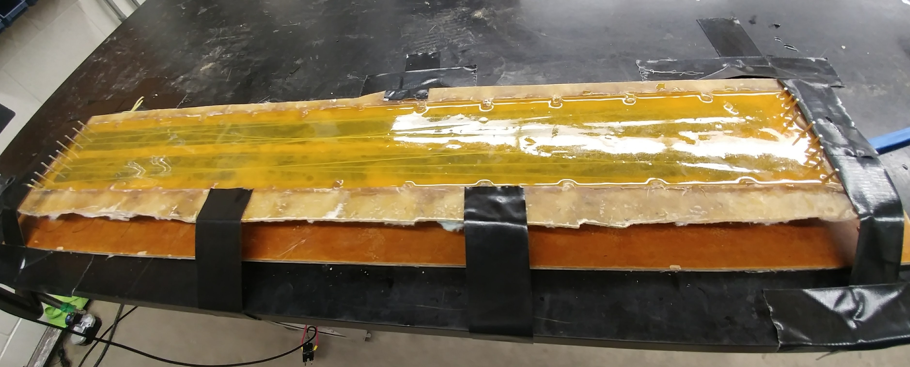
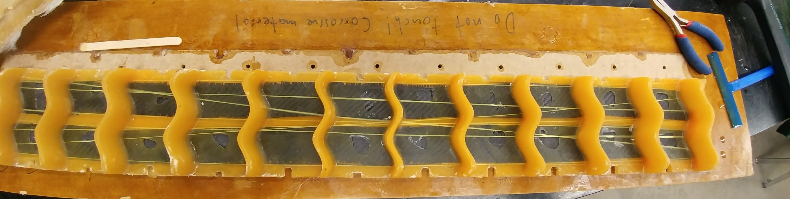
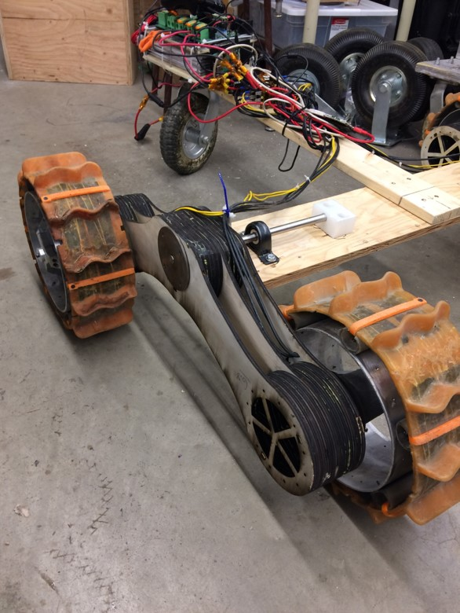

The University of Saskatchewan Space Team (USST) is a student run engineering group based at the University of Saskatchewan with a focus on space related projects. Between 2015 and 2019 I was involved in the rover project as a mechanical engineer working on the wheel treads, chassis, and suspension systems. The goal was to make a “Martian” style rover to compete in the University Rover Challenge and the Canadian International Rover Challenge.
Custom wheel treads where created using a combination of urethane, carbon fibre, and Kevlar string. The carbon fibre and Kevlar provided bending stiffness and tensional strength while the urethane held the mixture together. Each tread was manufactured by hand using a custom fibre glass mould.
 During my third year on the team I lead the design and building of a new rover chassis and suspension system with the goal of increasing the space inside for electrical components and stability of the rover while driving. The process involved creating a 1/3 scale prototype of the suspension system. Then moving onto a full-scale prototype where we could test the dynamics of the suspension while turning. The chassis is created using square carbon fibre tubes creating the large rectangular framework. The suspension system used hand laid carbon fibre to create the suspension arches and suspension arms connected to the chassis. The moulds were created using a combination of 3D printing and laser cut MDF.
